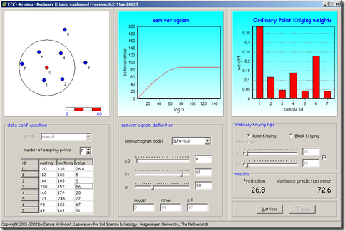

Poco più di due anni fa pubblicammo il primo post che introduceva il Geospatial Revolution Project, un ambizioso progetto della Penn State University nato con l’obiettivo di ampliare la conoscenza sulla storia, le applicazioni, le questioni legate alla privacy ed alla giurisprudenza e il futuro potenziale delle tecnologie spaziali. Ne nacque una delle esperienze più belle fatte come TANTO, la traduzione in Italiano dei sottotitoli dei 4 episodi, in collaborazione con Penn State University.
Oggi parte il primo corso su Coursera dedicato alle mappe, dal titolo “Maps and the Geospatial Revolution“, il cui docente - Anthony C. Robinson - è (guarda caso) della stessa università.
“Coursera” non credo abbia bisogno di presentazioni, è una di quelle cose che capita di citare quando si vuole evidenziare il bello del web. E’ una società di formazione in partnership con le migliori università e organizzazioni di tutto il mondo, per offrire corsi on-line gratuiti e per tutti. Sul loro sito si legge:
We envision a future where everyone has access to a world-class education that has so far been available to a select few. We aim to empower people with education that will improve their lives, the lives of their families, and the communities they live in.
Qualche giorno fa ho fatto 40 anni e mi sembra un momento della vita molto bello. Questo corso mi fa tornare indietro di 20 anni, alla voracità di conoscenza un po’ irrazionale e poco analitica, ma anche alla bocca amara fatta per certi brutti sapori e ai crampi per mancanza di materia prima (parlo solo di conoscenza ).
L’andy di 20 anni fa sarebbe stato felice di poter disporre di un corso di questo tipo e di avere una banda internet che consentisse di usufruire di servizi di questo tipo; l’Andrea di oggi si iscrive sapendo di non avere il tempo libero e leggero di quegli anni, e spera di poter arrivare in fondo.
Non so dirvi quanta qualità ci sarà, ma mi sembrava utile darne notizia e seguire la Rivoluzione Geospaziale.
Il primo impatto con la geostatistica può essere molto duro; specie se da un giorno all’altro si passa dal fare belle carte (false) tematiche ed allestimenti per la stampa, all’analisi spaziale.
Si parte quasi sempre da una “strana” nuvola di punti, che rappresenta la distribuzione di una serie di dati noti, e dalla quale si dovrà eseguire un’interpolazione. Per fortuna esiste l’arma segreta: il kriging.
E’ uno dei nomi che ti passa più sotto gli occhi, e solo per questo hai il sospetto che sia qualcosa di importante. Ricordi subito di averlo visto citato in quel particolare modulo di quel software, e magari provi subito ad usarlo. Pochi click e produci una bella carta di dispersione di una certa variabile. Spegni subito il cervello e vai ad impaginare la carta prodotta: un reticolato kilometrico, una legenda, una freccia nord ed una scala metrica. Non ti resta che esportare un bel pdf e consegnarlo a chi di dovere. FINITO!!!
Ovviamente non ho finito alcunché. L’esempio di sopra, macchiettistico ma non lontano da diverse realtà, contiene un brutto esempio procedurale. Non bisognerebbe mai limitarsi a fare qualche click su qualche bottone di un’interfaccia di un software, senza capire i processi che stanno alle spalle.
Il kriging è un famosissimo metodo di interpolazione spaziale, con diverse varianti. “E’ un metodo di regressione usato nell’ambito dell’analisi spaziale (geostatistica) che permette di interpolare una grandezza nello spazio, minimizzando l’errore quadratico medio.” (Kriging – Wikipedia, da http://it.wikipedia.org/wiki/Kriging).
Ci sono diverse pubblicazioni e libri di testo che ne parlano diffusamente e che ne illustrano i principi su cui si poggia. Per i neofiti sarà di grande aiuto uno strumento didattico come E{Z}-Kriging.
Consente a studenti con un background matematico di base di esplorare e comprendere il mondo del kriging, ed in particolare quello dell’ordinary kriging. Si presenta con un’interfaccia grafica divisa in tre pannelli (vedi figura sottostante):
quello per configurare la base dati
quello per la gestione del semivariogramma
e quello per il kriging

La semplicità di utilizzo è molto alta. E’ possibile impostare la posizione del punto di cui si vuole stimare il valore interpolato (in rosso e a sinistra, nella figura in alto) e quella dei punti con valori noti, così come variare i parametri del semivariogramma; per ogni modifica potremo valutarne immediatamente le conseguenze:
quanto pesi nel modello un punto al di fuori del range
quanto sia ridotta l’influenza di punti aggregati
quanto il variare dei valori dei punti, alteri i valori previsti e la varianza dell’errore
come il modello di forma del semivariogramma, il nugget, il sill ed il range influenzino i risultati del kriging
…
Non è uno strumento per fare vere simulazioni, a partire da dati propri. E’ utile “soltanto” per capire come funziona questo famoso metodo di interpolazione, sia che lo si voglia applicare, sia che lo si voglia spiegare a qualcun altro.
Segnalo in chiusura due belle letture utili a chi voglia avvicinarsi alla geostatistica ed al kriging:
Chi di voi non ha mai giocato al Meccano, con i Lego o al “piccolo chimico dei poveri” (intendo l’elettrolisi dell’acqua fatta con una mina di matita, una vite e una pila elettrica) senza provare un brivido nell’essere riusciti a realizzare una macchina, una costruzione o un esperimento tutto da soli?
Ricordi di infanzia legati all’esercizio della mente, al gusto della scoperta, alla necessità di inventarci i giochi con poco…
Beh, senza stare a scomodare troppo la “nostalgia canaglia”, con Phun possiamo cimentarci ad esplorare il mondo della fisica 2D inventando piccoli esperimenti di fisica newtoniana. Per la relatività speciale ci stanno lavorando.
Il piccolo software, sviluppato per il suo MSc in Computer Science dal geniale Emil Ernerfeldt, si basa su algoritmi di fisica che permettono di simulare il moto dei corpi con una fedeltà incredibile. Onnipresente è ovviamente la forza di gravità, che muove tutti gli oggetti che saremo noi stessi a creare con matita e pochi altri tool di disegno.
Per afferrare le potenzialità o semplicemente la genialità dell’idea di Emil, vi consiglio vivamente di dare un’occhiata al video su YouTube (qui sotto) ma soprattutto a quelli correlati, realizzati da autentici folli, che hanno speso credo diverse ore a creare veri e propri mondi virtuali nei quali avvengono le cose più assurde (ma verosimili), tra “incredible machines”, cittadelle che crollano, mostri meccanici e altre amenità…
Sul sito ufficiale è poi possibile scambiare i mondi 2D creati da voi a da altri entusiasti del Newton redivivo. Beh, non vi resta che scaricare Phun e dare sfogo alla vostra fantasia, riandando con la memoria a quando ci bastava poco per divertirci.
Uno dei sentieri meno battuti dei dati geografici è quello relativo alla loro comunicazione. E’ davvero difficile, se non impossibile, trovare soluzioni, plugin o applicazioni capaci di tirare fuori prodotti multimediali utili a facilitare la divulgazione di dati spaziali, soprattutto quando la dimensione tempo è fondamentale.
Mostrare efficacemente i trend evolutivi di dati demografici, epidemiologici, ambientali, facendo uso di animazioni è tutt’altra cosa rispetto ad una monotona, fredda sequenza di diapositive di mappe o grafici.
Ed ecco che ci viene in soccorso UUorld, geniale quanto semplice applicazione a metà strada tra GIS e produzione multimediale… in realtà molto più GIS. UUorld è in effetti un viewer di dati geografici con funzionalità estremamente semplici rispetto ai suoi “colleghi”, ma ha un target molto specifico: quello di facilitare e rendere efficace la comunicazione dei dati.
Il punto di forza di UUorld è quello di essere un viewer GIS “4D”, con la possibilità di creare “mappe animate” nelle quali vengono mostrati i trend evolutivi di uno specifico dato, legato ad unità di aggregazione spaziali, come ad esempio le singole nazioni. Così potremo capire ad esempio in che modo si è diffuso l’uso di internet in Europa dal 1990 al 2004, o mettere in evidenza il tasso di analfabetismo a livello mondiale negli ultimi 30 anni.
Una volta selezionato il dato che si vuole analizzare e l’area di riferimento (Europa, Africa, Asia, Americhe o il mondo intero) si potrà scegliere la modalità con la quale visualizzarlo, tra poligoni estrusi che vanno su e giù, gradienti di colore o entrambe. Non resta che inquadrare l’area da visualizzare aggiustando tilt/zoom e cliccare Play, potrete dunque osservare con una efficacissima animazione cosa è successo nel mondo in un determinato periodo di tempo.
Naturalmente è possibile esportare il risultato in diversi formati multimediali, dalla semplice immagine statica al filmato con encoding MPEG-1, MPEG-4, Flash Video e AVI.
L’applicazione è scaricabile ed utilizzabile liberamente, ed è fornita con un set di dati “embedded” di tipo demografico, sociologico, epidemiologico aggregati a livello nazionale, messi insieme dal gruppo di sviluppatori di UUorld. Il dato raster di base usato come riferimento è il classicissimo Blue Marble global mosaic.
Sebbene UUorld sia freeware, è di fatto sviluppato da una software house che basa il suo business sull’assistenza e la consulenza alla realizzazione di applicazioni ad hoc. E il suo limite purtroppo sta proprio in questo. Al momento non è possibile infatti importare dati dall’esterno, e si può solo sperare che questa funzionalità venga presto implementata.
UUorld rimane quindi per ora un bell’applicativo, non customizzabile con dati esterni, ma semplice nell’uso ed efficace nella rappresentazione delle informazioni. Lo vedo particolarmente utile come strumento di analisi delle questioni globali a scuola. Non rimane che sperare il team di sviluppatori sia magnanimo e con le prossime release possa essere possibile importare dati.
Quelli di Google un po’ ci sono ed un po’ ci fanno, ma da utente è spesso soltanto un piacere avere a che fare con le risorse messe da loro a disposizione (direttamente o indirettamente).
La didattica è un mio grande interesse, putroppo poco coltivato, e risorse come quelle che trovate sulla sezione Schools del sito Google del Regno Unito, mi fanno andare in “brodo di giuggiole”. Per chi ama la cartografia ed i software in qualche modo correlati, c’è un regalo speciale: una guida di Google Earth dal titolo “Virtual Fieldwork using Google Earth“.
E’ una guida che fornisce le basi necessarie ad un insegnante, per organizzare dei seminari pratici sull’utilizzo di Google Earth: dall’utilizzo dei comandi di navigazione alla creazione di placemark e percorsi, dall’integrazione con un GPS, alla condivisione dei layer creati.
Lezioni online per spiegare scienza e tecnologia Oilproject organizza con l’Istituto Italiano di Tecnologia una serie di lezioni divulgative su neuroscienze, nanotecnologie, farmacologia e macchine intelligenti, per raccontare al grande pubblico lo stato dell’arte della ricerca di base e applicata. Qui tutti i dettagli. Leggi tutto... (0)
Il GFOSS Day 2011 è a Foggia I prossimi 24 e 25 novembre l’Università degli Studi di Foggia ospiterà il GFOSS DAY 2011, organizzato come di consueto dall’Associazione Italiana per l’Informazione Geografica Libera GFOSS.it Leggi tutto... (1)
Mappali, denunciali e... tassa.li Tassa.li è una interessante startup realizzata da un gruppo di giovani tecnologi, con l’intento di rendere facile la denuncia di esercizi commerciali che non rilasciano il regolare scontrino fiscale. E in un periodo nero come questo, molta gente avrà una gran voglia di partecipare. Grazie a una applicazione disponibile sia per iOS che Android, è infatti possibile in pochi clic geotaggare l’esercizio e riportare la somma dello scontrino non emesso. Il tutto in maniera assolutamente anonima. E questi ragazzi dimostrano di vedere molto lontano, perché presto rilasceranno i dati raccolti in forma totalmente aperta e libera. (7)
TANTO non rappresenta una testata giornalistica ai sensi della legge n. 62 del 7.03.2001, in quanto non viene aggiornato con una precisa e determinata periodicita'. Pertanto, in alcun modo puo' considerarsi un prodotto editoriale.


{kind=link}